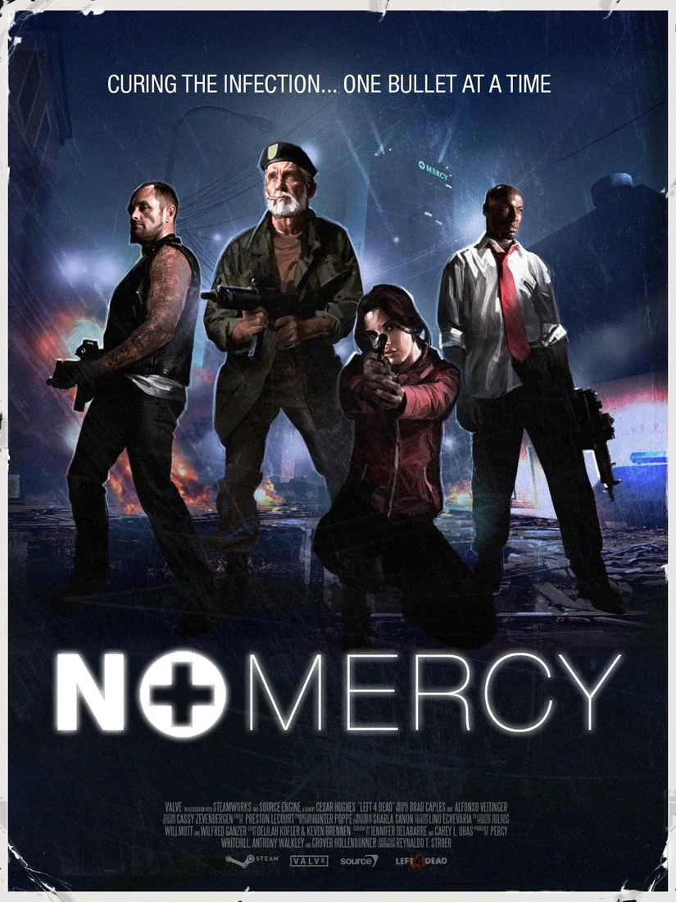

EDICIONES DE LA SAGA
Haz clic en la portada de cualquier entrega para reproducir su tráiler.
 ▶️ Reproducir Tráiler
▶️ Reproducir Tráiler
Left 4 Dead (2008)
 ▶️ Reproducir Tráiler
▶️ Reproducir Tráiler
La puerta sigue cerrada. ¿Estás listo para entrar?
Explora los expedientes de los supervivientes, estudia las amenazas y vuelve a vivir las dos entregas de la saga.
Haz clic en la portada de cualquier entrega para reproducir su tráiler.
▶️ Reproducir Tráiler
▶️ Reproducir Tráiler
Monitoreo e información en tiempo real sobre la infección y supervivientes.
Supervivientes Registrados
Infectados Especiales
Tasa de Infección
Juegos Soportados
Haz clic en cualquier personaje para ver su biografía y detalles.
Haz clic en un infectado para analizar sus habilidades y nivel de amenaza.
Recorre los escenarios de ambas entregas. Selecciona una campaña para abrir su expediente y explorar la galería.

ARCHIVO 001 // CEDAPósters de campañas incluidos localmente para que cada escenario coincida con su nombre y se vea también sin conexión.